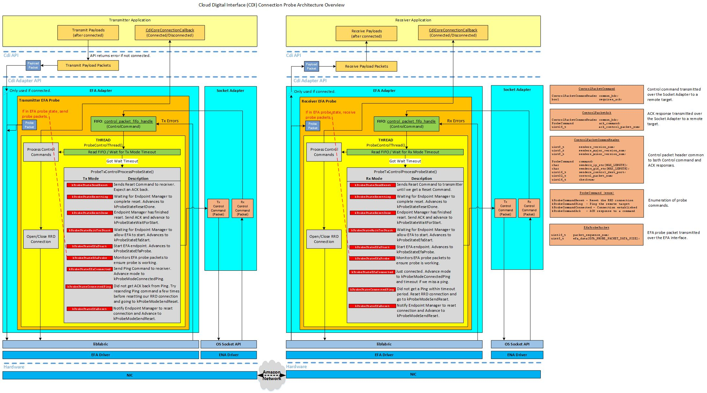

Architecture Overview
In order to establish an SRD connection between two EC2 instances using EFA adapters, a specific sequence of events must occur. The EC2 instance used as a transmitter must obtain an EFA device identifier of the remote EC2 instance in order to establish the connection. Initial startup and optimization of the SRD network flows need to be establish before the connection can be used by the application. For this, a socket based interface is used to control communication. The specific steps used are described below:
- Create the socket based control interface. The instances start in kProbeStateSendReset.
- Receiver sends reset requests to transmitter until a reset request is received. All requests contain the EFA device identifier of the sender.
- Once the receiver has received the reset request, it advances to kProbeStateEfaReset and the Endpoint Manager is used to reset the local connection. While this is occuring, the state is set to kProbeStateResetting. When complete, the state is set to kProbeStateResetDone, which causes the ACK to be sent back to the transmitter. State then advances to kProbeStateEfaProbe. This state is used to transmit several SRD packets over the EFA interface to establish the initial network flows.
- Once the transmitter has received the ACK for a reset request, it uses the Endpoint Manager to prepare the connection to be started. While this is occuring, the state is set to kProbeStateWaitForStart. When complete, the state is set to kProbeStateEfaStart, which causes the connection to be started and begins transmitting SRD packets over the EFA interface. State is set to kProbeStateEfaProbe.
- After the desired number of SRD probe packets have been successfully transmitted and confirmed as being received by the receiver, the receiver will advance to kProbeStateEfaConnected, call the user registered callback function CdiCoreConnectionCallback(), and send kProbeCommandConnected to the transmitter. After the transmitter receives the command, it advances the state to kProbeStateEfaConnected and the user registered callback function CdiCoreConnectionCallback() is invoked.
- While connected, the transmitter will send kProbeCommandPing commands using the control interface to the receiver to ensure both transmitter and receiver are operating correctly. This is done at a regular interval (SEND_PING_COMMAND_FREQUENCY_MSEC). If the transmitter does not receive an ACK back within a timeout period (TX_PING_ACK_TIMEOUT_MSEC), a few more attempts are made. If these attempts fail, the transmitter disables the EFA connection and returns to kProbeStateSendReset state.
NOTE: The user registered callback function CdiCoreConnectionCallback() is invoked whenever the connection state changes (kCdiConnectionStatusConnected or kCdiConnectionStatusDisconnected).
The diagram shown below provides an overview of the connection probe architecture.
